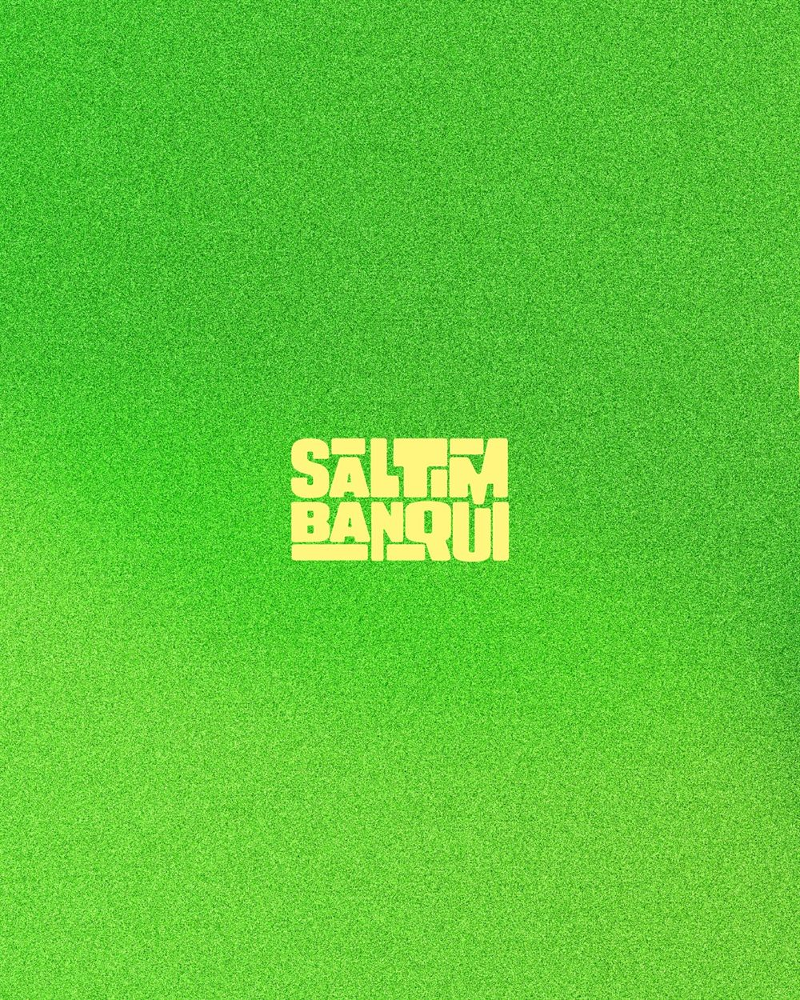
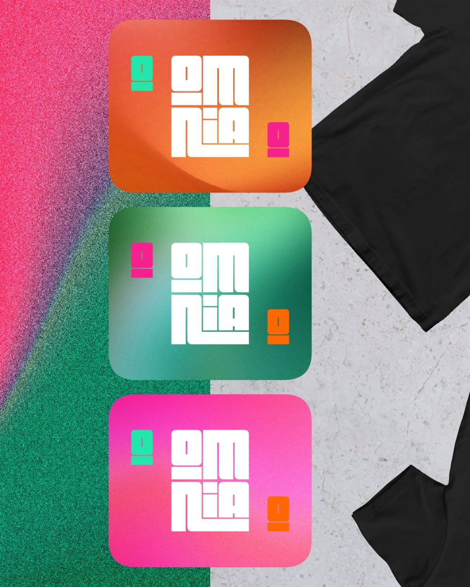

LaBregaEstudio.
No hacemos ruido. Hacemos marcas.
Estudio de branding, dirección creativa y publicidad. Desde Canarias, para marcas que prefieren decir algo a decirlo más alto.
Baja para ver
28°07′N · 15°26′OLas Palmas de Gran Canaria
Hora local--:--:--

IManifiesto
Esta tierra nos enseñó algo antes que el diseño:
nos enseñó a bregar.
No venimos a seguir tendencias. No venimos a hacer ruido. Venimos a crear, venimos a construir, venimos a bregar. Somos un estudio pequeño a propósito: trabajas con quien diseña, no con un intermediario.
Por eso decimos que el diseño no maquilla, revela. Tu marca ya está ahí dentro. Nuestro trabajo es quitarle la capa que no la dejaba verse, y dejarla en pie.
La Brega Estudio · Canarias
Lo que hacemos
IISeis maneras de bregar
- 01
Branding
Identidad completa: naming, logotipo, sistema gráfico y un manual para que no se despeine.
- 02
Dirección de arte
El criterio visual de todo lo que sale con tu nombre. La mirada, no solo el archivo.
- 03
Publicidad
Campañas con idea. De las que se quedan, no de las que se saltan.
- 04
Diseño gráfico
Cartelería, editorial, packaging, aplicaciones. Lo que haga falta imprimir.
- 05
Contenido
Redes con criterio: piezas que cuentan algo y suenan a ti.
- 06
Digital
Webs y productos que respetan la marca en vez de aplastarla.
El taller
IIICinco láminas
SaltimbanquiIdentidad
Omnia
IdentidadRevela
CampañaDía de Brega
CampañaSan Borondón
Dirección de arteEfemérides
IVCartelería de la casa




Arrastrao pasa el dedo
Cómo bregamos
VDe pensar y creer; y después crear
I
Escuchar
Antes de abrir un archivo, preguntamos. Qué vendes, a quién, y qué te hace distinto de verdad.
II
Pensar y creer
La idea manda. Si no nos la creemos nosotros, no hay manera de que se la crea nadie más.
III
Crear
Ahí llega el dibujo: identidad, sistema y piezas. Lo bonito viene después de la idea, pero viene.
IV
Bregar
Y luego se defiende. Aplicarla, cuidarla y que aguante de pie cuando salga a la calle.
VI¿Tienes una marca entre manos?